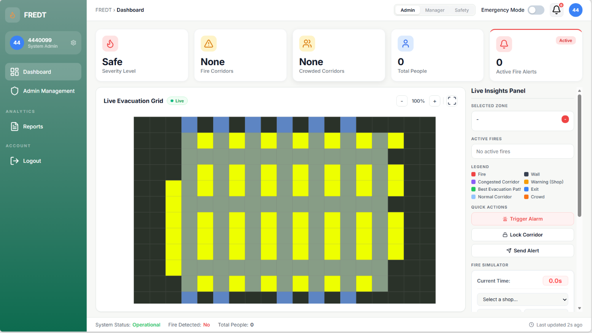

01
FREDT — AI-Powered Smart Evacuation System
An intelligent emergency-response platform for indoor fire scenarios. It combines crowd monitoring, fire-risk prediction, and risk-aware route optimization to support safer evacuation decisions.